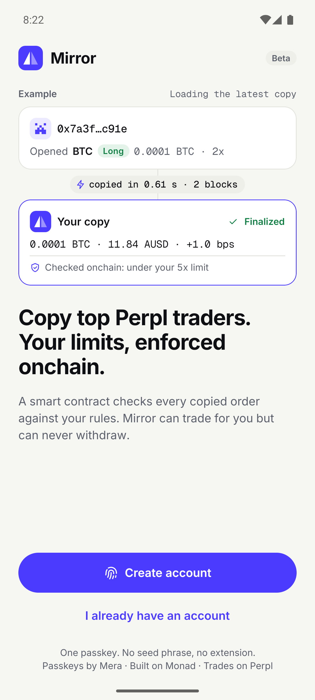
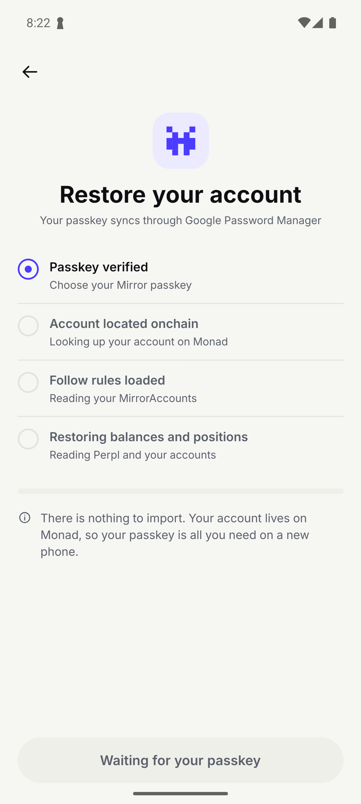
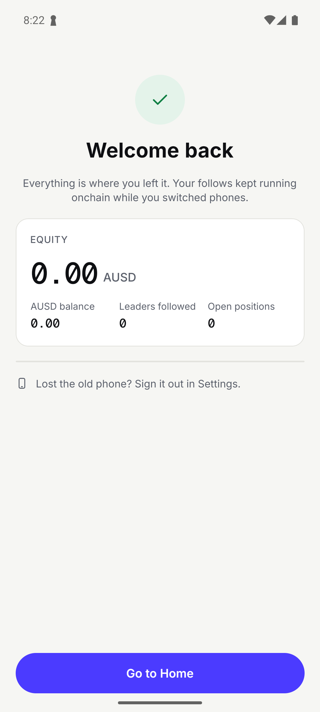
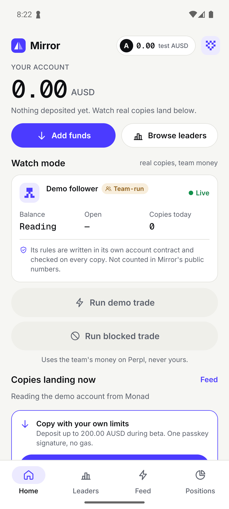
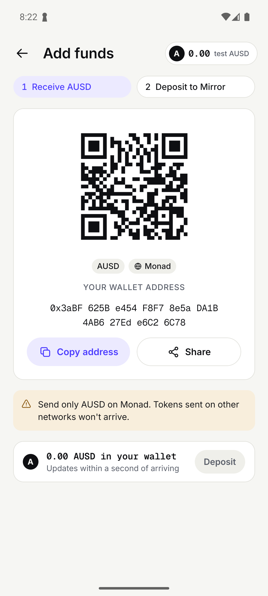

✓ 01 restore the demo follower's owner with its passkey (mirror-a)
addr 0x3aBF625Be454F8F78e5aDA1B4AB627Ede6C26C78

01-emulator-5554-s14-launch.png 02-emulator-5554-s15-waitFor.png
02-emulator-5554-s15-waitFor.png
03-emulator-5554-s16-tap-id_onboarding.restore.png 04-emulator-5554-passkey-picker.png
04-emulator-5554-passkey-picker.png 05-emulator-5554-passkey-biometric.png
05-emulator-5554-passkey-biometric.png 06-emulator-5554-s17-after-passkey.png
06-emulator-5554-s17-after-passkey.png
07-emulator-5554-s18-waitFor.png
08-emulator-5554-s19-tap-id_restore.go.home.png 09-emulator-5554-s20-open.png
09-emulator-5554-s20-open.png
10-emulator-5554-s21-readText.png 11-emulator-5554-s26-open.png
11-emulator-5554-s26-open.png 12-emulator-5554-s27-assert-FAILED.png
12-emulator-5554-s27-assert-FAILED.png